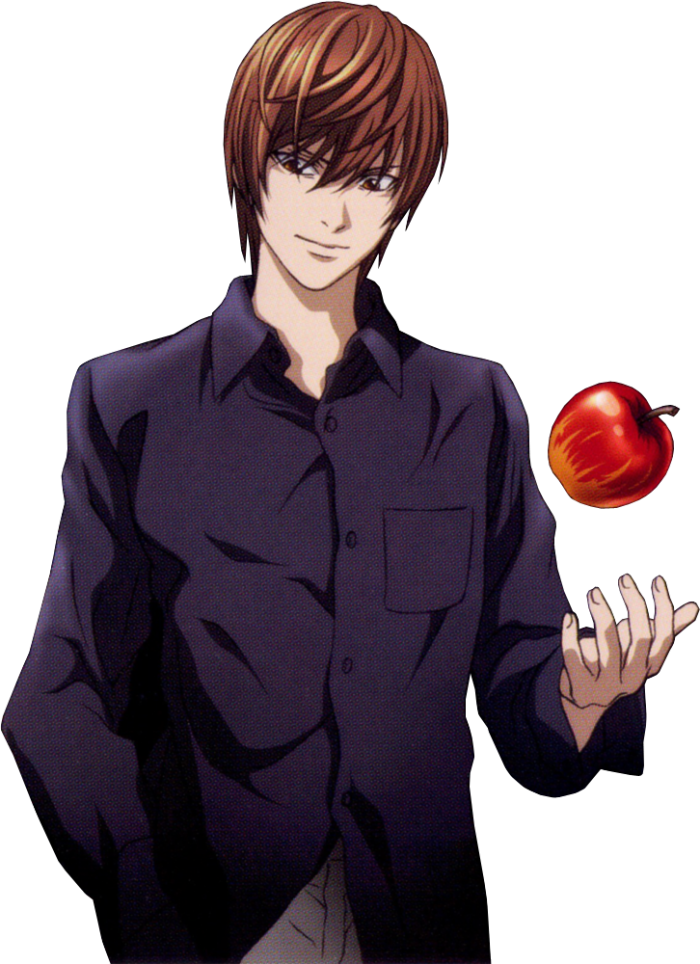
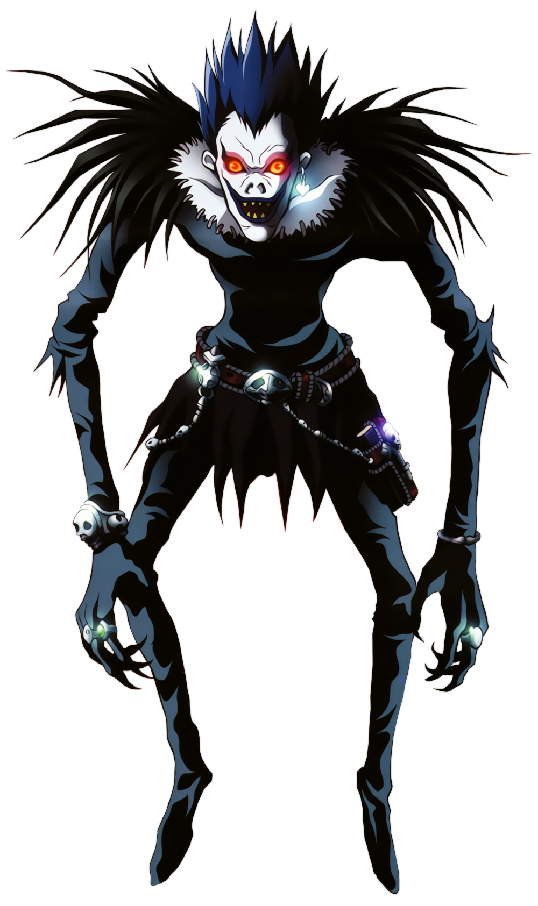
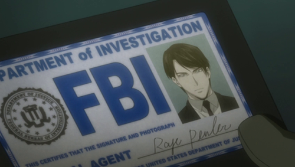
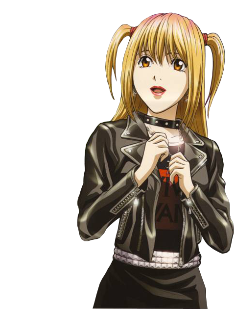

ОСТОРОЖНО СПОЙЛЕРЫ!
Однажды одному богу смерти, Рюку, стало скучно, и он уронил на землю тетрадь смерти, орудие убийства. Лайту, нашедшему тетрадь, выпал случай изменить мир быстро и безнаказанно. Он стал вершить своё правосудие, убивать преступников. Скоро люди стали догадываться, что за странными смертями преступников кто-то стоит(его назвали Кирой), чередой сердечных приступов заинтересовался интерпол. За это дело взялся лучший детектив в мире, L. Он обратил внимание на первое убийство Киры, и так как об убитом говорилось только в Японских новостях сделал вывод, что Кира в Японии.
 
Противостояние гениев — лучшего ученика Японии с одной стороны и лучшего детектива в мире с другой — начинает историю «Тетради смерти»
Рюк есть яблоки и следит за происходящим.
Лайт не может совершать ошибки, потому что если его поймают, он не сможет вершить своё правосудие и получит смертный приговор. Его оппонент тоже не может сделать ни одной ошибки, потому что в противном случае Кира убьёт его. В это противостояние, к тому же, вмешиваются сверхъестественные силы в лице богов смерти, а также другие последователи Киры и сторонники L.
Полиция японии вместе с L начинает расследование, но у Лайта есть козырь, его отец глава расследования, и Лайт узнаёт все детали расследования. L догадывается, что Кира знает о расследовании и начинает подозревать полицию.
Для расследования в Японию прибывают 12 сотрудников фбр, но Лайт узнаёт, что за ним следят. Он угрожает следящему за ним и тот пишет имена остальных на бумаге, вырваной из тетради смерти, из-за чего они все умирают от сердечного приступа. Жена убитого догадывается, что Кира тот кому её муж показывал уждостоверение в котором было его настоящее имя, но в полицейском участке встречат Лайта. Лайт узнаёт её имя и записывает в тетрадь, указывая причину смерти суицид.
L, в связи со странным поведением одного из убитых, начинает подозревать тех за кем тот следил. В комнате Лайта устанавливают жучки. Лайт узнаёт, что в его комнату входили пока его не было и начинает изображать жизнь нормального ученика, одной рукой решая уравнение, другой убивая преступников. Спустя несколько дней камеры убирают, и Рюк спокойно может есть яблоки).
Несмотря на неопровержимое алиби L продолжает подозревать Лайта. Что бы доказать его виновность L раскрывает Лайту свою личность, называясь чужим именем. L приглашает Лайта принять участие в расследовании по Делу Киры.
Миса, второй Кира, получив тетрадь смерти, отправляет на «Сакура ТВ» видеозаписи с целью привлечь внимание Киры и добиться встречи. В этой записи она называет себя Кирой, однако L сразу обнаруживает изменения в способностях Киры (новый Кира умеет убивать, не зная имени). Детективы составляют ложное послание от Киры (на самом деле, это послание составляет Лайт Ягами, поэтому оно не совсем ложное), которому Миса охотно верит. Миса делает ещё одно видео, в котором сознаётся, что она — второй Кира и предлагает первому Кире встретиться с ней. Она присылает на «Сакура ТВ» дневник, в котором зашифровано место встречи — Аояма, клуб «Note Blue». Лайт отправляется туда под предлогом расследования.
Увидев Лайта, Миса сразу признала в нём Киру: её глаза Бога смерти позволяют видеть продолжительность жизни только у тех людей, кто не владеет Тетрадью Смерти. Недолго думая, она находит в Интернете адрес Лайта и приходит к нему домой. Далее уже не понятно, кого она больше любит: Лайта — за то, что он является Кирой, или Киру — за то, что его олицетворяет Лайт.